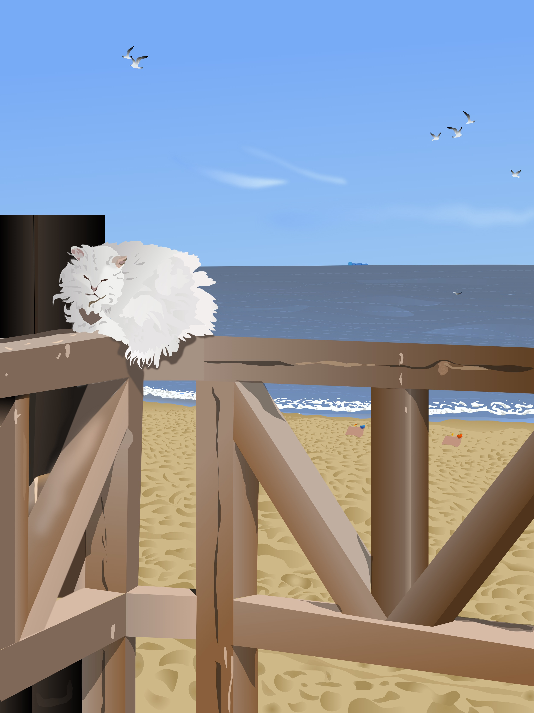

About my art
Hello again! This is a page about my work, where you can find many interesting facts.
What is a digital art?
The concept "digital art" refers to artwork created or displayed utilizing digital technology.
What is a phisical art?
Art that completely exists in physical reality, in both space and time, is referred to as physical art as opposed to conceptual art. It is a physical object, which is its ontological position. Although the art is abstract in nature, it is concretely executed. For painting or sketching, you need a lot of equipment.
What was my experience with these types of arts?
You could wonder which of these arts is superior. Physical art is constrained in that way because you have to spend time going back to really rectify errors or make adjustments on concrete works using tangible equipment. Digital art saves a lot of time since you can merely edit faults or things you're not pleased with. Traditional artworks are difficult to replicate since they are handcrafted. Unlike a digital work, which can be instantaneously copied and shared, every handmade creation is genuinely a one-of-a-kind item. As a result, traditional artwork often fetches a higher price than digital artwork.